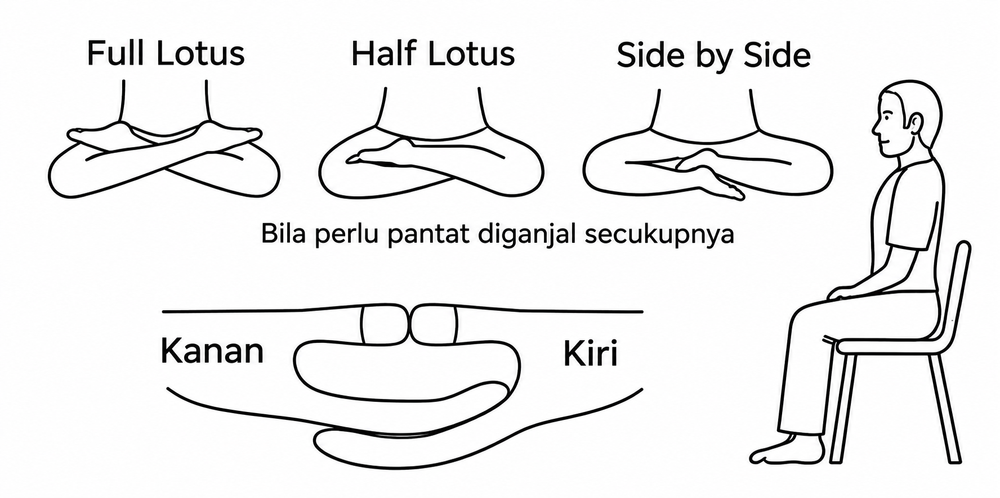

Membangun Pikiran Harmonis & Menyembuhkan Tubuh Fisik
ByMeditasi adalah praktik fokus pikiran untuk mencapai ketenangan, keseimbangan emosional, dan penyembuhan diri. Melalui meditasi, kita dapat mengurangi stres, meningkatkan kesadaran, dan memperkuat koneksi antara tubuh dan pikiran.

| Posisi | Keterangan |
|---|---|
| Full Lotus | Kedua kaki dilipat di atas paha, posisi paling tradisional namun membutuhkan fleksibilitas |
| Half Lotus | Satu kaki dilipat, posisi lebih mudah untuk pemula |
| Side by Side | Kedua kaki sejajar di samping, posisi paling nyaman untuk pemula |
💡 Catatan: Bila perlu, Anda bisa duduk di kursi dengan kaki menyentuh lantai.
✨ Meningkatkan ketenangan dan kesejahteraan mental
✨ Mengurangi stres dan kecemasan
✨ Meningkatkan fokus dan konsentrasi
✨ Membantu penyembuhan emosional dan spiritual
✨ Mengembangkan rasa kasih sayang dan empati
Di Bali Usada, saat melakukan Body Scanning, kita memancarkan cinta kasih ke titik-titik cakra ini secara berurutan:
Setelah merilekskan tubuh dan cakra, kita memancarkan frekuensi positif keluar dari dada.
Mengarahkan niat baik dan cinta kasih secara melingkar dan menyeluruh ke segala penjuru: Depan, Kanan Depan, Kanan, Kanan Belakang, Belakang, Kiri Belakang, Kiri, Kiri Depan, Atas, Bawah, Dalam, Luar.
Dalam Tapa Brata Kelas 1, kita belajar menyembuhkan diri sendiri melalui body scanning dan membagikan energi positif tersebut untuk menyembuhkan orang lain.
Mantra utama di dalam hati adalah: "Semoga semua hidup berbahagia."
Saat kita ingin mendoakan kesembuhan untuk orang lain yang sedang sakit, kita memusatkan pikiran di dada (Cakra Jantung), membayangkan orang tersebut, lalu memancarkan kalimat positif:
"Semoga kamu sehat, tenang, dan berbahagia. Semoga sakit yang ada di [sebutkan organ/penyakitnya] segera terurai dan sembuh."
Latihan di Tapa Brata membawa kita mengenali ke mana energi tubuh kita tersumbat dan bagaimana melepaskannya lewat kelembutan cinta kasih.
"Melalui Pikiran Harmonis, saya merasakan pelepasan. Memancarkan cinta kasih ke 12 arah dan memaafkan orang-orang membuat saya ringan. Energi terbebas dari sumbatan emosi, dan tubuh menjadi lebih sehat."
Program latihan bersama meditasi kesehatan secara live online. Mari pertahankan disiplin mengasah teknik meditasi dan cinta kasih bersama-sama.
(Setiap Hari Pagi & Malam)
Latihan bersama Pak Merta Ada:
Khusus Selasa Pagi & Minggu Malam diadakan live di YouTube.
🔗 Subscribe di YouTubeLatihan Meditasi di Rumah:
Tonton Playlist Video"Semoga Semua Hidup Berbahagia 😊🙏🏻"
↑ Kembali ke Awal